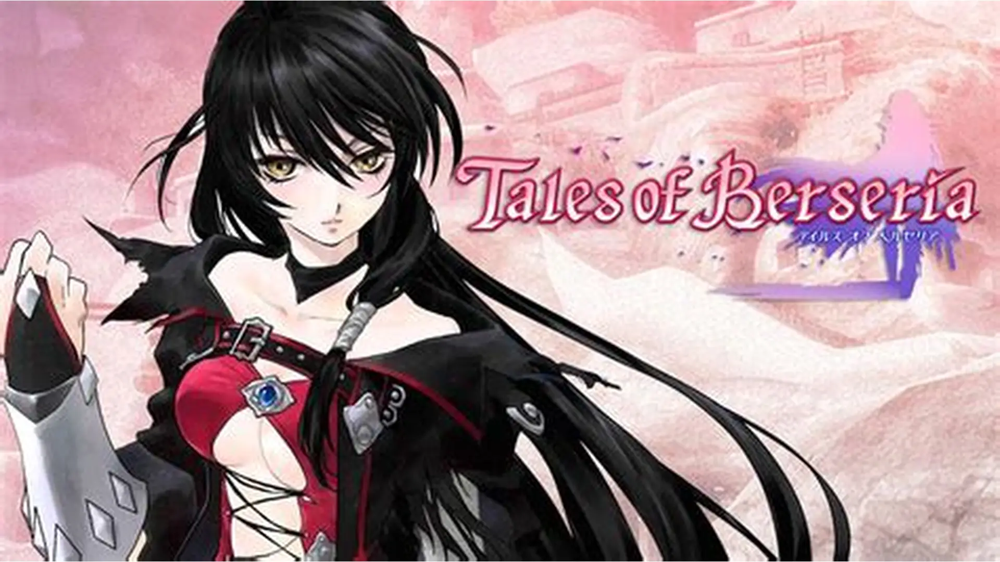
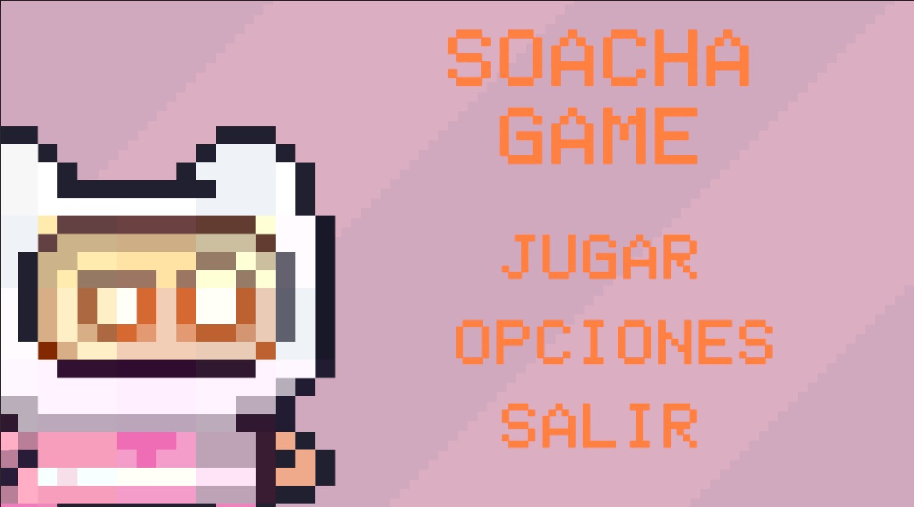

Explora el universo del conocimiento con videojuegos educativos para primaria.
Explorar JuegosLos videojuegos educativos convierten el aprendizaje en una experiencia divertida. Motivan, refuerzan conocimientos y estimulan la mente de forma natural.
Es uno de los mejores JRPG de una saga que tiene más de 20 juegos, y volverá después de ocho años con un remaster que lo hará todavía más accesible.
Tales of Berseria Remastered será el próximo juego de la saga Tales of relanzado por Bandai Namco
CALCUNAUTAS es un proyecto diseñado para fortalecer el aprendizaje matemático mediante videojuegos educativos interactivos.
¿Eres docente o padre de familia? ¡Hablemos!
Email: contacto@calcunautas.com
Linea telefonica:3028598356
Este proyecto se establece en la Corporación Universitaria Minuto de Dios – Sede Soacha, institución donde se originó y ha sido desarrollado en el marco de la carrera de Ingeniería de Sistemas.